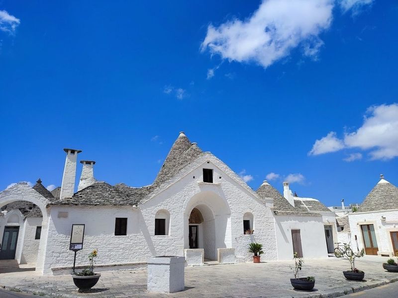
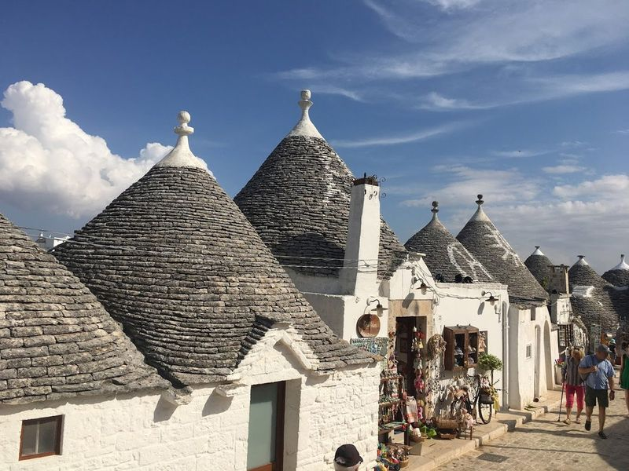
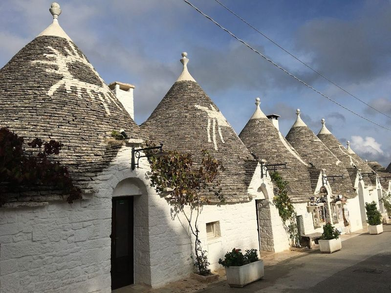
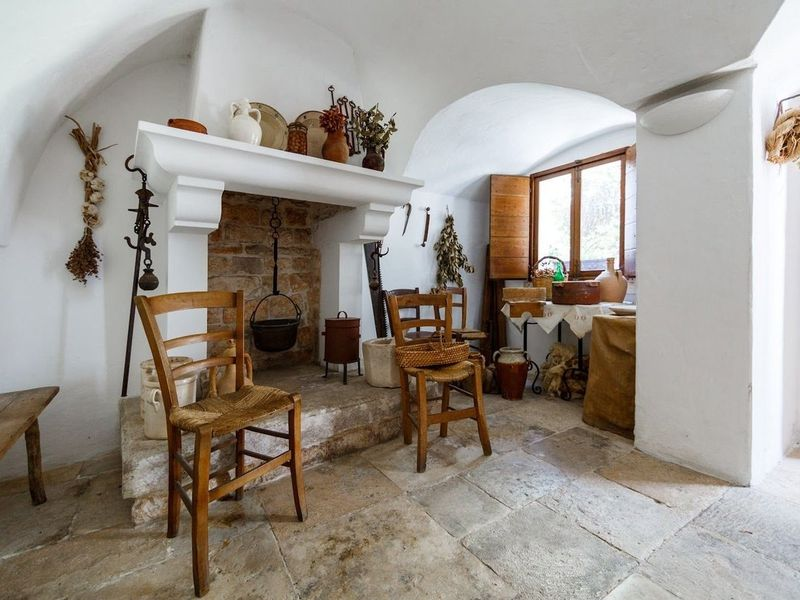
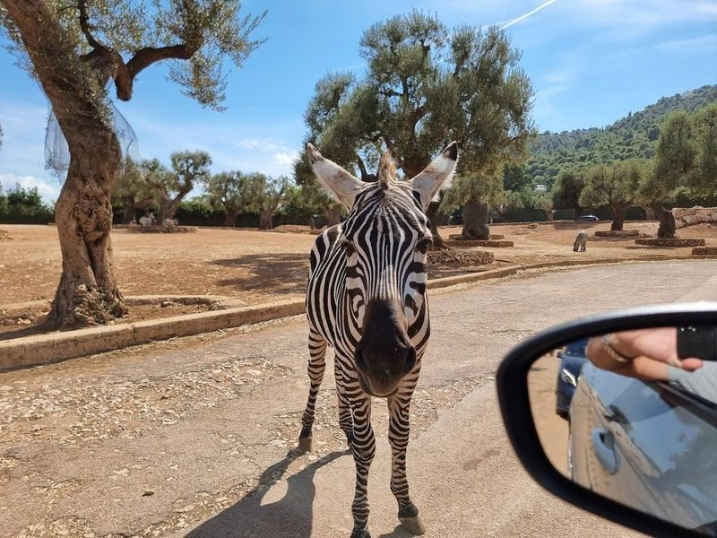
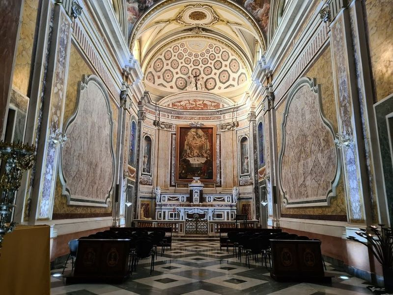
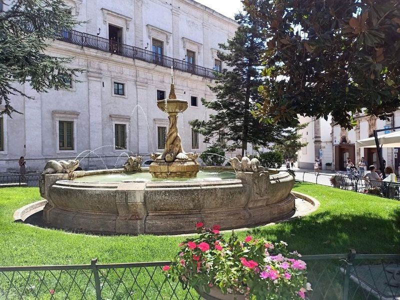
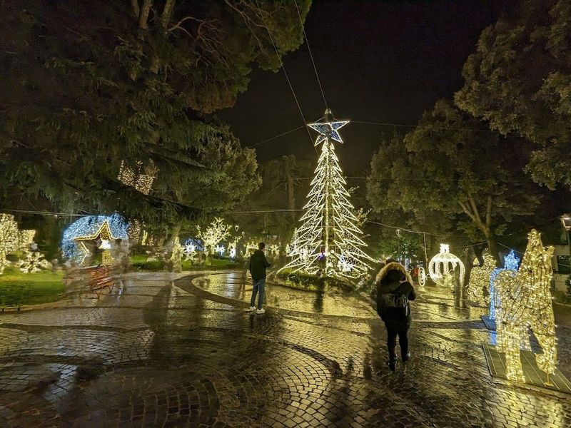
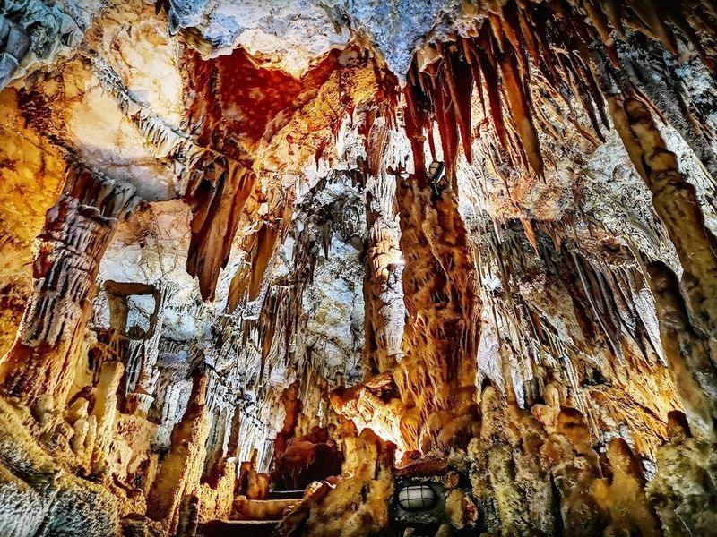
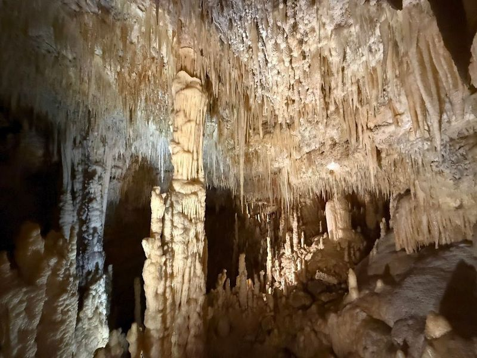

Explore Alberobello
A Brief History
Alberobello arose in the sixteenth century on the Murge plateau when the Counts of Conversano ordered dry-stone trulli so the settlement could be dismantled to avoid royal taxes on permanent towns. Conical roofs and whitewashed walls became permanent after Bourbon reforms in the eighteenth century, supporting wine and almond cultivation. The Rione Monti and Aia Piccola quarters now preserve one of Apulia's most distinctive vernacular landscapes above the Itria Valley roads to Bari and Taranto.
Attractions Map
Top Sights & Activities

Trullo Sovrano
Trullo Sovrano is a remarkable 18th-century conical hut that now serves as a heritage museum, offering travellers a glimpse into the traditional furnishings and artifacts of the past. Situated near Basilica dei SS Medici, this two-story trullo stands out for its grandeur and unique charm. The museum inside is not only informative but also entertaining, showcasing the diverse uses of wine throughout history.

Casa D'Amore
Casa D'Amore is a historic home in Alberobello, built in 1797 and considered the first in the area to be constructed with terracotta and mortar. This marked a significant transition as prior to the official recognition of Alberobello as a city, stable buildings were prohibited by local Counts and could only be built with dry stone.

Alberobello - Rione Monti
Alberobello, particularly the enchanting district of Rione Monti, is a must-visit gem in Puglia, Italy. This small town captivates travellers with its trulli— whitewashed stone houses topped with conical roofs that create a fairytale-like atmosphere. As wander through Rione Monti, discover over 1,000 of these unique structures, each telling its own story and showcasing traditional craftsmanship.

Trullo Siamese
The Trullo Siamese monument is a shop selling souvenirs in the town of Alberobello, in south-central Italy. The trullo dates back to the 1400s and is unique because it has two cones joined centrally. The site is catalogued as a cultural landmark. The site is catalogued as a cultural landmark.

Zoosafari Fasanolandia
in the picturesque coastal town of Fasano, Zoosafari Fasanolandia spans an impressive 150 acres and offers a unique blend of wildlife encounters and thrilling amusement park rides. Families can embark on an exciting drive-through safari where they’ll encounter free-roaming animals like elephants, giraffes, lions, tigers, and bears. The experience continues with a tropical center showcasing fascinating reptiles such as snakes and alligators.

Basilica di San Martino
In the heart of Martina Franca's historic center stands the Basilica di San Martino, a Baroque masterpiece dating back to the 18th century. The basilica boasts an intricate exterior facade adorned with elaborate carvings and a bas-relief of San Martino on horseback sharing his cloak with a beggar. Inside, travellers are treated to an elegant interior featuring impressive frescoes and elaborate architecture housing important artworks by local painters.

Palazzo Ducale
Palazzo Ducale in Martina Franca is a historic building that once served as the seat of the Caracciola family and now houses the town hall. travellers can explore a long gallery of rooms hosting various exhibitions, showcasing paintings, sculptures, photographs, and artifacts that depict the rich history of Martina Franca. The museum also features exhibits on local wildlife and conservation efforts.

Villa Garibaldi
Villa Garibaldi is a must-visit public garden offering a cool retreat on hot days and picturesque walks from Torre Civica and Rione La Lama. During Christmas, the garden is adorned with enchanting lights, creating a festive atmosphere for all to enjoy. The illuminations set up during this time add to the magical ambiance, especially for children. Additionally, it serves as a nice setting to escape the summer heat and features a café that occasionally opens on Sundays.

Grotta del Trullo - Putignano
Grotta del Trullo, located just outside of Putignano in Italy, is a fascinating cave system that was discovered by chance around 80 years ago. The entrance to the cave is through a trullo and travellers can explore the different caves using a deep metallic staircase. This cave was once used as a temple to honor Athena, the goddess. travellers can enjoy guided tours with knowledgeable guides who provide clear explanations in both English and Italian.

Grotte di Castellana
Grotte di Castellana, located 40km southeast of Bari, is Italy's longest natural subterranean network. Discovered in 1938, the cave system features a 3.2KM-long and 230-foot deep tour route with limestone formations such as stalactites and stalagmites. The highlight is the Grotta Bianca (White Grotto), adorned with delicate stalactites.